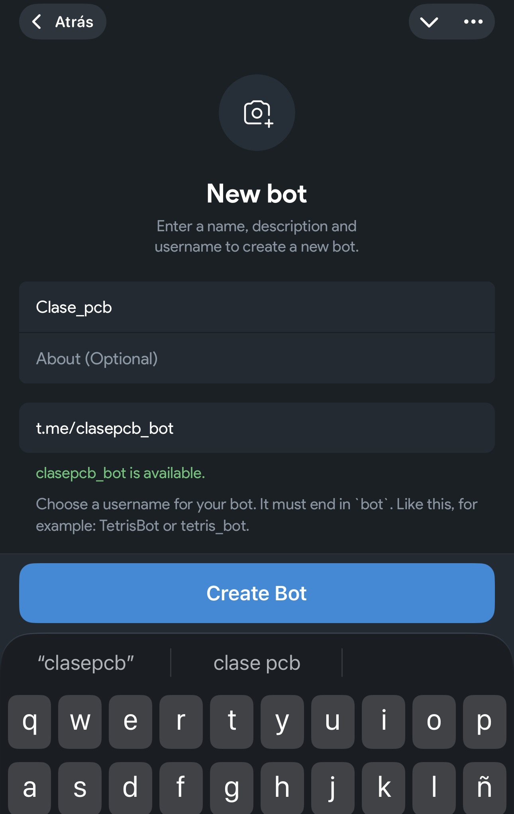
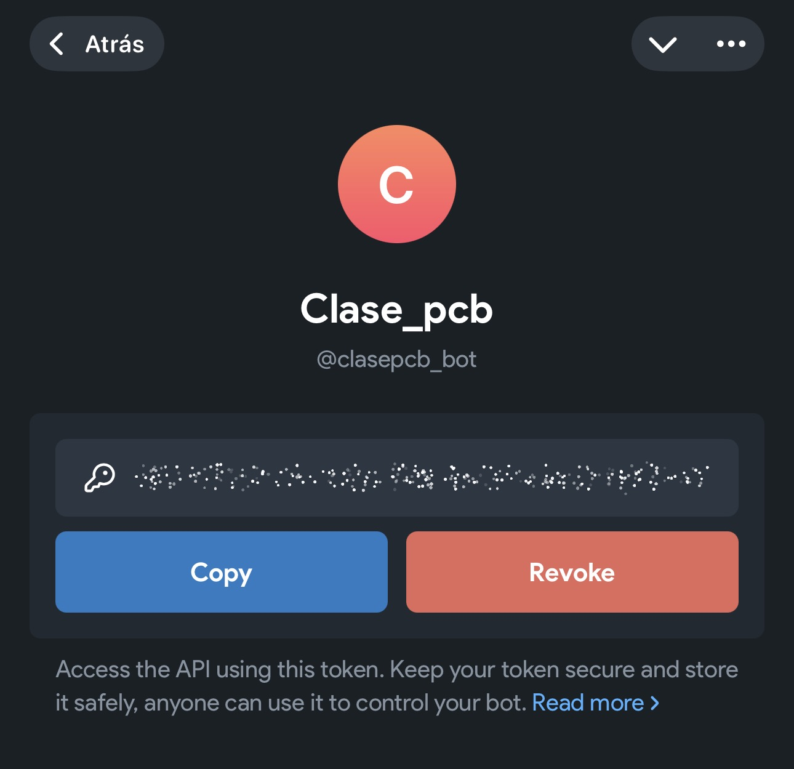
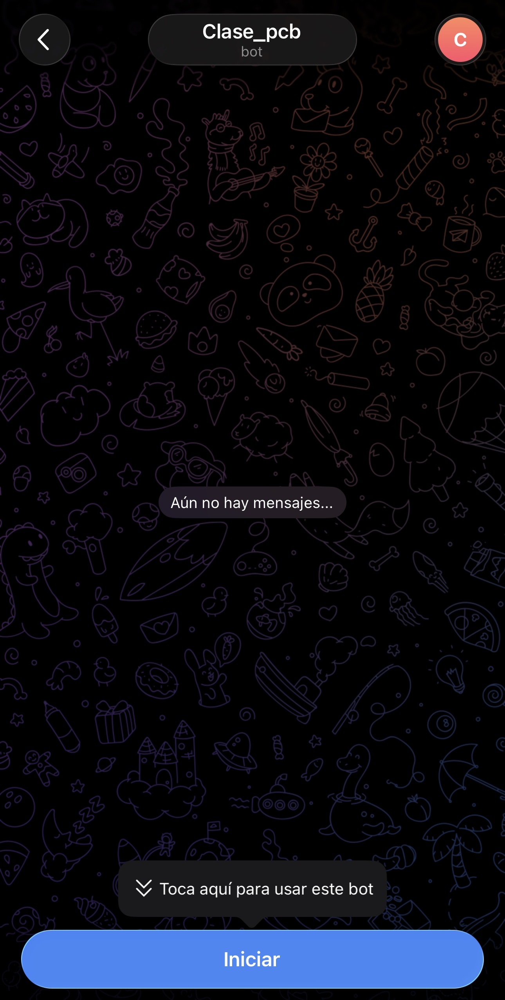

Mensajes a Telegram
En Telegram:
- Busca @BotFather y ABRIR

- Crear un nuevo Bot

- Ponle un nombre al Bot y elige un nombre de usuario que termine en
bot, elusarnametiene que estar disponible

- BotFather te dará un TOKEN

✅ Ese token es tu “contraseña” del bot, No lo compartas!!!
- Abre el chat con tu bot (búscalo por
username).

- Presiona Iniciar

Conseguir tu chat_id (para mandarte mensajes)
TOKEN="TU_TOKEN_AQUI"
curl -s "https://api.telegram.org/bot${TOKEN}/getUpdates" Busca en la salida algo así:
"chat":{"id":123456789,"first_name":"Pedro", ...}📌 “id”:123456789 ese número es tu CHAT_ID.
Enviar un mensaje con curl (lo esencial)
TOKEN="TU_TOKEN_AQUI"
CHAT_ID="TU_CHAT_ID_AQUI"
curl -s -X POST "https://api.telegram.org/bot${TOKEN}/sendMessage" \
-d "chat_id=${CHAT_ID}" \
-d "text=Hola 👋 Mensaje enviado desde Bash"Buenas prácticas: NO hardcodear el token (y no subirlo a git)
Archivo .env (recomendado)
Crea un archivo .env fuera de tu repo o ignóralo con .gitignore:
nano .envPegar la info en el archivo .env
TOKEN="TU_TOKEN_AQUI"
CHAT_ID="TU_CHAT_ID_AQUI"En tu script agrega estas lineas
source .envSI esta en tu proyecto git agrega el archivo a tu .gitignore:
nano .gitignoreY agrega el archivo
.envAdemás agregar seguridad al archivo
chmod 600 .envFunción reusable tg_send (para cualquier script)
tg_send () {
local msg="$1"
curl -s -X POST "https://api.telegram.org/bot${TELEGRAM_BOT_TOKEN}/sendMessage" \
-d "chat_id=${TELEGRAM_CHAT_ID}" \
-d "text=${msg}" \
-d "disable_web_page_preview=true" > /dev/null
}Uso:
tg_send "✅ Pipeline terminó correctamente."